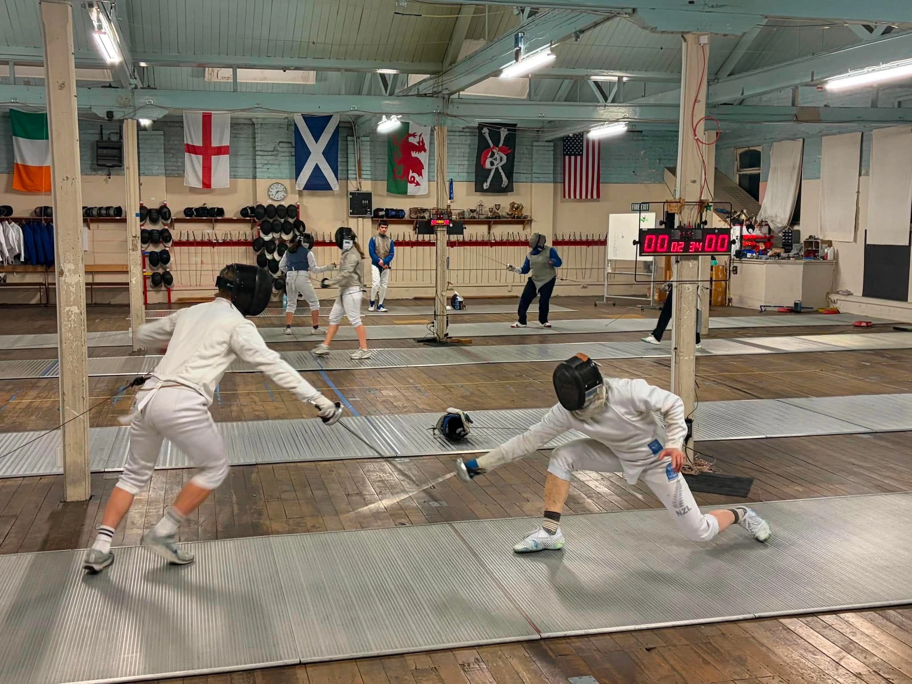
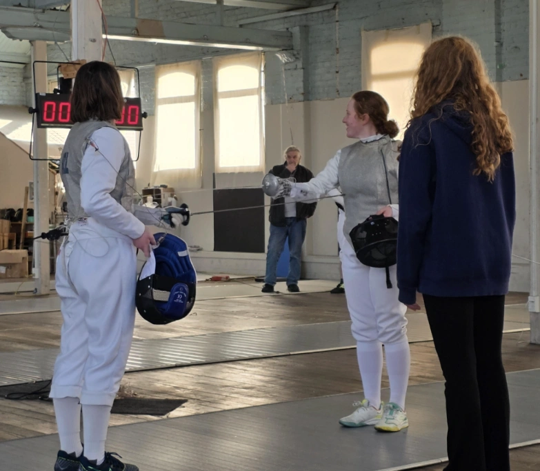
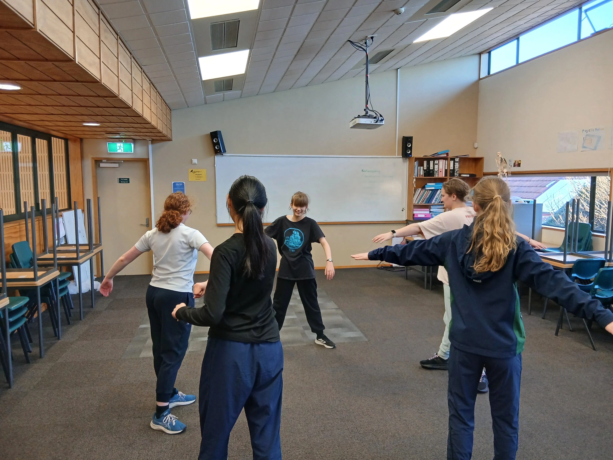

What is fencing?
Fencing is a combat sport based on historical European sword fighting. Best described as sword fighting. Two fencers fight (bout) on a 14 meter strip (piste). To score points you need to land the tip or edge of the blade on the designated target area. The blade is blunt and flexible to ensure the safety of the fencers. There are three disciplines of fencing, foil, epee and sabre.
Foil is the lightest weapon. To score the fencers must hit the target area with the tip of the blade. The target area is the torso. Only one fencer can score at a time. When both fencers hit, the priority system is used to determine who gets the point. If a fencer has priority but it is not on the torso, the hit is considered off target and the bout resumes. Most skills learned while training in foil can transfer well to the other weapons, which is why many beginners start with this weapon.
Epee is the heaviest weapon. To score the fencers must hit there with the tip of the blade. There is no specific target, the whole body is a valid target. This disciple does not use priority. If both fencers hit at the same time, it is a “double” and both fencers receive a point.
Sabre is the fastest weapon. It is considered as a cutting weapon because you can use any part of the blade to score, not just the tip. The target area is from the waist up, including the head. This disciple uses the priority system. Because this discipline is usually intense and high energy, there are a few extra rules to ensure the safety of the fencers.
Fencing at Columba.
Columba College's fencing team started in 2025 it started with 5 regular fencers and has grown. The Columba fencing squad specializes in the foil discipline. It requires critical thinking, precision, and timing. Anyone is welcome to start fencing. The classes are designed to accommodate fencers at any level. It does not matter whether you have been fencing for 2 years or are just starting.
This is not a sport “just for the sporty kids”, it is for everyone. There are many styles of fencing which work for different people. For example some Columba fencers are defensive, moving only when needing to and patiently waiting for their opponents to attack, some fencers are intense where they are fast and constantly moving, taking the fight to their opponents. There are many different combinations and other styles. The fencers learn their style of fencing through trial and error. Making mistakes is part of the learning process for this sport.
